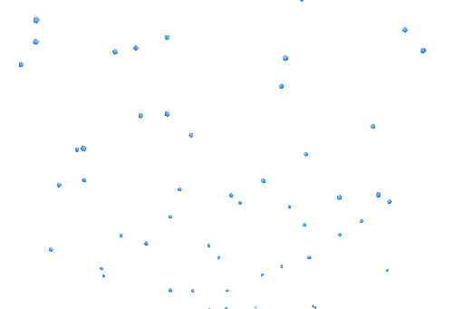
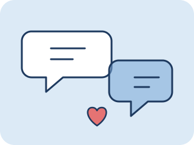
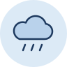
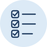

TAG
Entenda o que é a Ansiedade Generalizada, seus principais sintomas e como pode ser tratada.
Saiba mais →
Transtornos mentais são condições que podem afetar nossos pensamentos, emoções e comportamentos, influenciando a forma como vivemos e nos relacionamos.
Este site foi desenvolvido pela turma 301 a partir de uma pesquisa sobre saúde mental, com o objetivo de informar, conscientizar e combater preconceitos.

Entenda o que é a Ansiedade Generalizada, seus principais sintomas e como pode ser tratada.
Saiba mais →
Conheça suas características, impactos no cotidiano e formas de cuidado.
Saiba mais →
Saiba mais sobre pensamentos obsessivos e comportamentos compulsivos.
Saiba mais →
Se você está passando por sofrimento emocional, procure ajuda. O CVV atende 24 horas, de graça, pelo telefone 188 e pelo site cvv.org.br. Em caso de emergência, ligue para o SAMU (192). Você também pode procurar a UBS ou o CAPS da sua região.